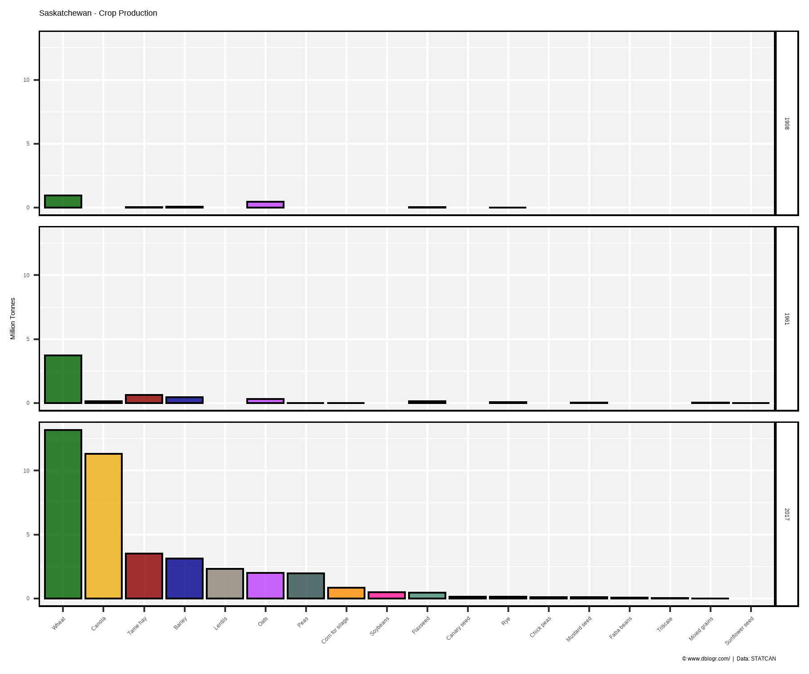
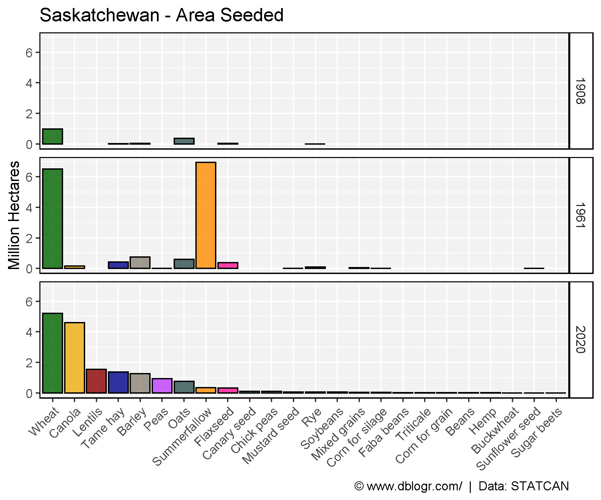
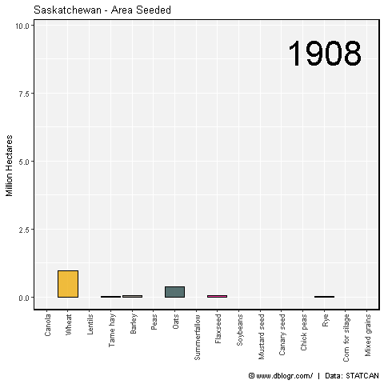
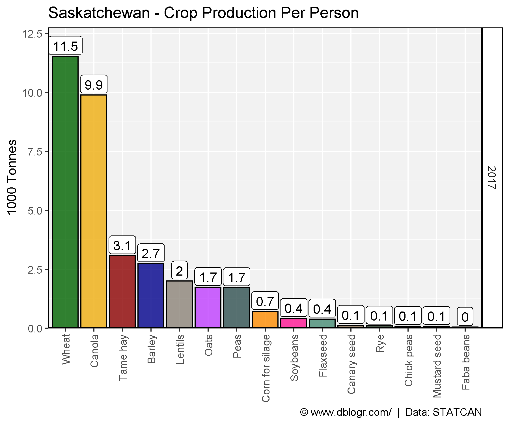
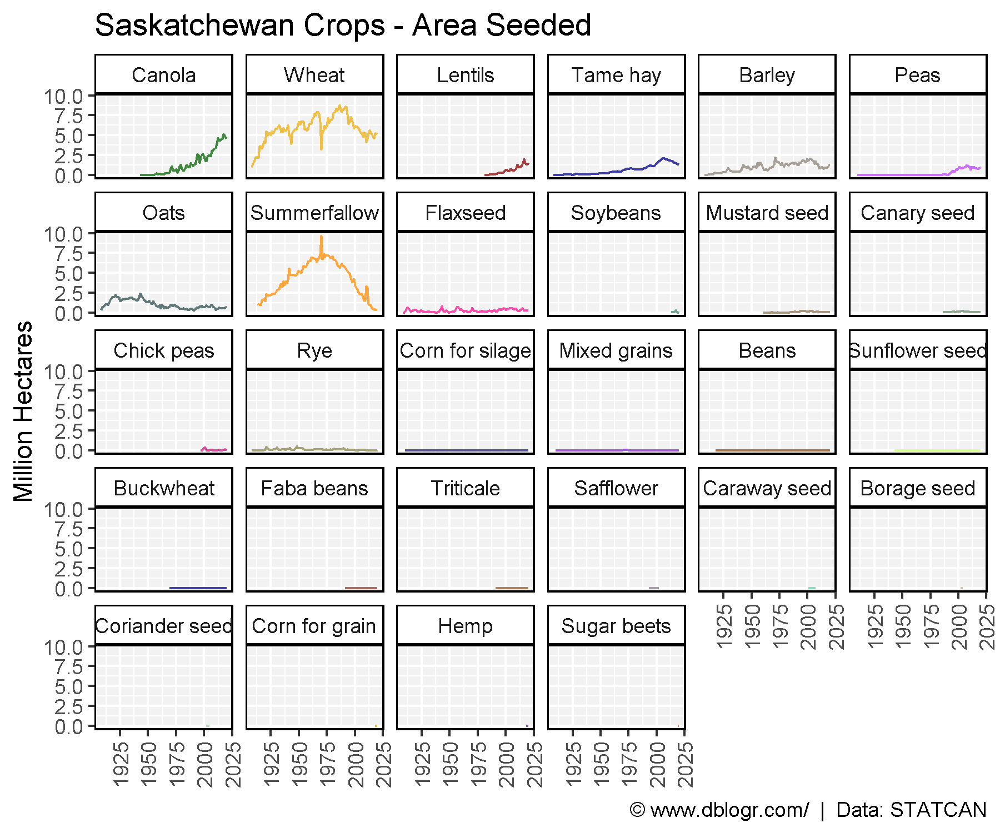
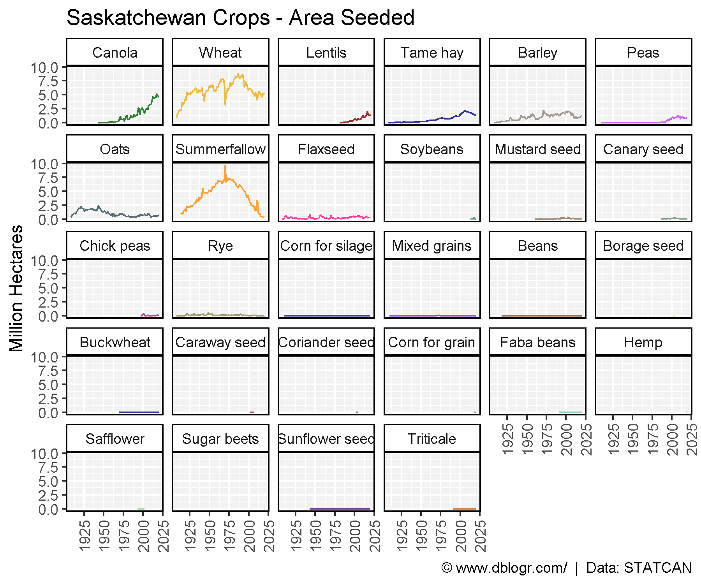
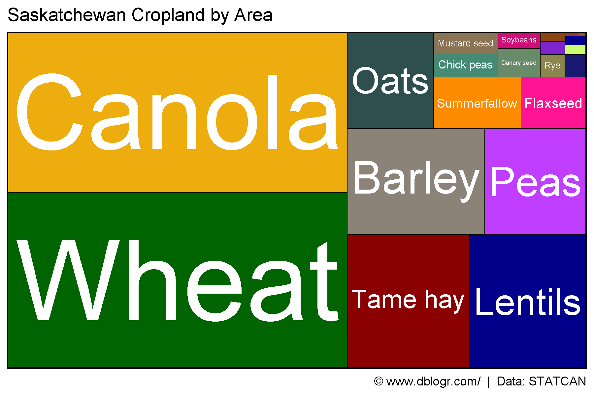

# devtools::install_github("derekmichaelwright/agData")
library(agData) # Loads: tidyverse, ggpubr, ggbeeswarm, ggrepel
library(treemapify) # geom_treemap()
library(gganimate)
Crop Production
# Create function to determine top crops
cropList <- function(measurement = "Production") {
# Prep data
xx <- agData_STATCAN_Crops %>%
filter(Area == "Saskatchewan", Year %in% c(1908, 1961, 2017),
Measurement == measurement)
# Get top 15 crops from each year
topcrops <- function(x, year, num) {
x <- x %>% filter(Year == year) %>% arrange(desc(Value)) %>%
slice(1:num) %>% pull(Crop) %>% unique() %>% as.character()
x
}
crops1908 <- topcrops(xx, 1908, 15)
crops1961 <- topcrops(xx, 1961, 15)
crops2017 <- topcrops(xx, 2017, 15)
# Order crop list based on 2017 production
myCrops <- unique(c(crops1908, crops1961, crops2017))
xx %>% filter(Year == 2017, Crop %in% myCrops) %>%
arrange(desc(Value)) %>% pull(Crop) %>% as.character()
}
Crop Production 1908, 1961, 2017
# Prep data
myCrops <- cropList(measurement = "Production")
xx <- agData_STATCAN_Crops %>%
filter(Area == "Saskatchewan", Year %in% c(1908, 1961, 2017),
Measurement == "Production", Crop %in% myCrops) %>%
mutate(Crop = factor(Crop, levels = myCrops) )
# Plot
mp <- ggplot(xx, aes(x = Crop, y = Value / 1000000, fill = Crop)) +
geom_bar(stat = "identity", color = "Black") +
facet_grid(Year~.) +
scale_fill_manual(values = alpha(agData_Colors, 0.75)) +
theme_agData(legend.position = "none", rotx = T) +
labs(title = "Saskatchewan - Crop Production", y = "Million Tonnes", x = NULL,
caption = "\xa9 www.dblogr.com/ | Data: STATCAN")
ggsave("crops_saskatchewan_01.png", mp, width = 6, height = 5)

Crop Area 1908, 1961, 2017
# Prep data
myCrops <- cropList(measurement = "Seeded area")
xx <- agData_STATCAN_Crops %>%
filter(Area == "Saskatchewan", Year %in% c(1908, 1961, 2017),
Measurement == "Seeded area", Crop %in% myCrops) %>%
mutate(Crop = factor(Crop, levels = myCrops) )
# Plot
mp <- ggplot(xx, aes(x = Crop, y = Value / 1000000, fill = Crop)) +
geom_bar(stat = "identity", color = "Black") +
facet_grid(Year ~ .) +
scale_fill_manual(values = alpha(agData_Colors, 0.75)) +
theme_agData(legend.position = "none", rotx = T) +
labs(title = "Saskatchewan - Area Seeded", y = "Million Hectares", x = NULL,
caption = "\xa9 www.dblogr.com/ | Data: STATCAN")
ggsave("crops_saskatchewan_02.png", mp, width = 6, height = 5)

# Prep data
myCrops <- cropList(measurement = "Seeded area")
xx <- agData_STATCAN_Crops %>%
filter(Area == "Saskatchewan",
Measurement == "Seeded area", Crop %in% myCrops) %>%
mutate(Crop = factor(Crop, levels = myCrops) )
# Plot
mp <- ggplot(xx, aes(x = Crop, y = Value / 1000000, fill = Crop)) +
geom_bar(stat = "identity", color = "Black") +
geom_text(aes(label = Year), x = 14, y = 9, size = 15) +
scale_fill_manual(values = alpha(agData_Colors, 0.75)) +
theme_agData(legend.position = "none", rotx = T) +
labs(title = "Saskatchewan - Area Seeded", y = "Million Hectares", x = NULL,
caption = "\xa9 www.dblogr.com/ | Data: STATCAN") +
# gganimate
transition_states(Year)
mp <- animate(mp, nframes = 2*(max(xx$Year) - min(xx$Year)), fps = 5, end_pause = 5)
anim_save("crops_saskatchewan_gifs_01.gif", mp, width = 600, height = 400)

Farm Area
# Prep data
xx <- agData_STATCAN_FarmLand_Use %>%
filter(Area == "Saskatchewan", Item == "Total area of farms",
Unit == "Hectares", !is.na(Value))
# Plot
mp <- ggplot(xx, aes(x = Year, y = Value / 1000000)) +
geom_line(color = "darkgreen", size = 1.25) +
scale_x_continuous(breaks = seq(1920, 2020, 10)) +
theme_agData() +
labs(title = "Total area of farms in Saskatchewan", y = "Million Hectares", x = NULL,
caption = "\xa9 www.dblogr.com/ | Data: STATCAN")
ggsave("crops_saskatchewan_03.png", mp, width = 6, height = 4)

All Crops
# Prep data
xx <- agData_STATCAN_Crops %>%
filter(Area == "Saskatchewan", Measurement == "Seeded area")
myCrops <- unique(c(cropList(measurement = "Seeded area"), as.character(xx$Crop)))
xx <- xx %>% mutate(Crop = factor(Crop, levels = myCrops))
# Plot
mp <- ggplot(xx, aes(x = Year, y = Value / 1000000, color = Crop)) +
geom_line() +
facet_wrap(Crop~., ncol = 6) +
scale_color_manual(values = alpha(agData_Colors, 0.75)) +
theme_agData(legend.position = "none", rotx = T) +
labs(title = "Saskatchewan Crops - Area Seeded", y = "Million Hectares", x = NULL,
caption = "\xa9 www.dblogr.com/ | Data: STATCAN")
ggsave("crops_saskatchewan_04.png", mp, width = 6, height = 5)

Summerfallow
# Prep data
xx <- agData_STATCAN_Crops %>%
filter(Area == "Saskatchewan", Crop == "Summerfallow",
Measurement == "Seeded area")
# Plot
mp <- ggplot(xx, aes(x = Year, y = Value / 1000000)) +
geom_line(color = "darkgreen", size = 1.25) +
scale_x_continuous(breaks = seq(1920, 2020, 10)) +
theme_agData() +
labs(title = "Summerfallow in Saskatchewan", y = "Million Hectares", x = NULL,
caption = "\xa9 www.dblogr.com/ | Data: STATCAN")
ggsave("crops_saskatchewan_05.png", mp, width = 6, height = 4)

Treemap
# Prep data
xx <- agData_STATCAN_Crops %>%
filter(Area == "Saskatchewan", Year == 2019, Measurement == "Seeded area") %>%
arrange(desc(Value)) %>% mutate(Crop = factor(Crop, levels = unique(Crop)))
# Plot
mp <- ggplot(xx, aes(area = Value, fill = Crop, label = Crop)) +
geom_treemap(color = "black") +
geom_treemap_text(place = "centre", grow = T, color = "white") +
scale_fill_manual(values = alpha(agData_Colors, 0.75)) +
theme_agData(legend.position = "none") +
labs(title = "Saskatchewan Cropland by Area",
caption = "\xa9 www.dblogr.com/ | Data: STATCAN")
ggsave("crops_saskatchewan_06.png", mp, width = 6, height = 4)

# Prep data
x1 <- agData_STATCAN_Crops %>%
filter(Area == "Saskatchewan", Measurement == "Production",
Crop %in% c("Lentils","Peas","Beans","Chickpeas")) %>%
group_by(Year) %>%
summarise(Value = sum(Value)) %>%
mutate(Crop = "Fake Meat Protein")
x2 <- agData_STATCAN_Crops %>%
filter(Area == "Saskatchewan", Measurement == "Production",
Crop == "Canola") %>%
mutate(Crop = "Evil Oilseeds")
xx <- bind_rows(x1, x2)
# Plot
mp <- ggplot(xx, aes(x = Year, y = Value / 1000000, color = Crop)) +
geom_line(size = 1.5, alpha = 0.8) +
facet_wrap("Saskatchewan" ~ .) +
scale_color_manual(name = NULL, values = c("darkgoldenrod2","darkgreen")) +
scale_x_continuous(breaks = seq(1910,2020,10)) +
theme_agData(legend.position = "bottom") +
labs(y = "Million Tonnes", x = NULL,
caption = "\xa9 www.dblogr.com/ | Data: STATCAN")
ggsave("crops_saskatchewan_07.png", mp, width = 6, height = 4)

© Derek Michael Wright www.dblogr.com/